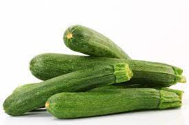

Produzione 2019
Zucchine

Coltivare in terreno molto ricco di materia organica e non coltivare dopo Solanacee o pinate della stessa famiglia delle Curcubitacee
-
Varietà: Zucchina chiara di Faenza
-
Periodo di semina: Marzo/Aprile
-
Primo raccolto: Fine Aprile
-
Secondo raccolto: Fine Luglio
-
Raccolto:
| Dimensione |
Quantità |
| Piccole (10cm) |
16 |
| Medie (11-16cm) |
26 |
| Grandi (>16cm) |
9 |
|
51 |
Piselli

American wonder: Varietà media precoce come ciclo colturale.
Consigli
-
Piante in semezaio riscaldato
E' importante
-
Acquistare vasetti biodegradabili (di cocco o cartone)
-
Mantenere areato il semezaio per evitare muffe
-
Non usare il coperchio del semenzaio
-
Non usare mettere il semenzaio vicino al termosifone
-
Fissare i sostegni nel terreno appena le piante raggiungono i 10 cm
-
Acquistare una rete con spazi di non più di 10 cm per garantire sostegni adeguati
Acquista semi